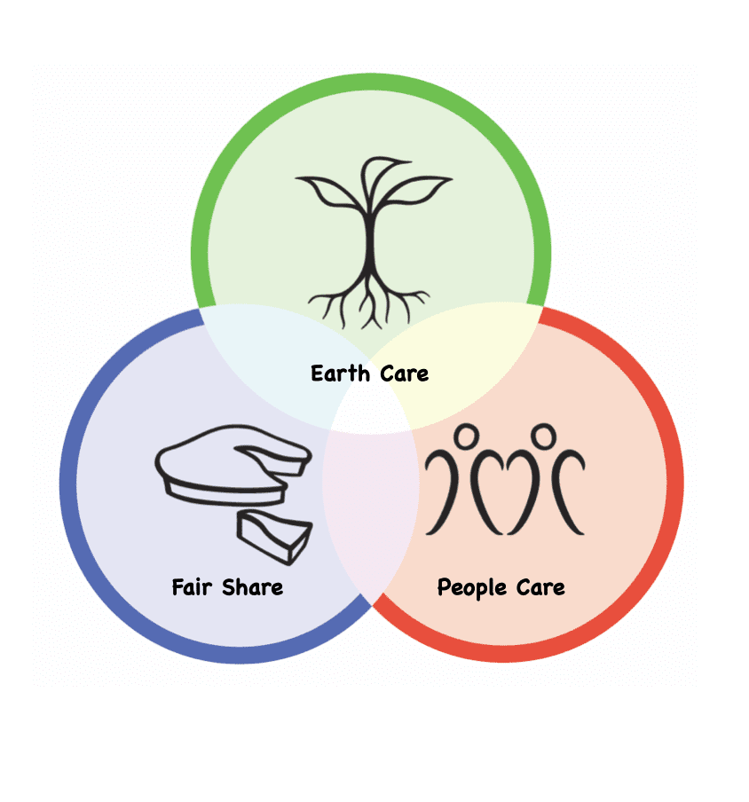

Permaculture is a holistic approach to agricultural and land management design
that attempts to mimic patterns found in natural ecosystems. It is a design system
that aims to create sustainable human habitats by integrating ecology, landscape,
organic gardening, architecture, and agroforestry in a harmonious and mutually beneficial way.
Permaculture starts with ethics.
From a Permaculture perspective, ethical actions are simply those that support life, and unethical actions
are the ones that harm or destroy life needlessly.
Ethics are the foundations of this design system and all actions must abide by the three ethics of permaculture:

Ethic #1: Care for Earth
This ethic emphasizes the need to respect and care for all living
and non-living elements of the Earth's ecosystems.
Ethic #2: Care for People
This ethic focuses on meeting the needs of individuals and communities
in ways that are sustainable and equitable, promoting social justice and well-being.
Ethic #3: Fair Share
This ethic advocates for the fair distribution of resources
and the sharing of surplus to ensure that everyone's needs are met
without overexploiting resources or creating inequality.
Principles
Permaculture principles are guidelines and concepts derived from observations of natural systems,
designed to inform and guide the practice of permaculture. With the three ethics as their cornerstone,
the principles serve as a framework for decision-making and design, emphasizing sustainable
and regenerative approaches to human settlement and agriculture.
Watch this video to find out more details about these 12 principles: